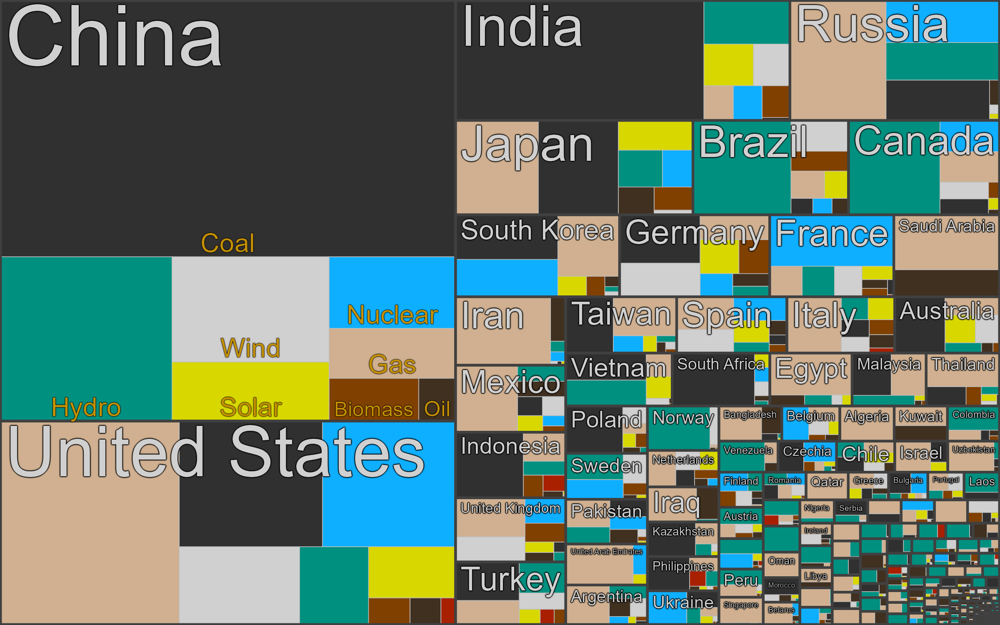
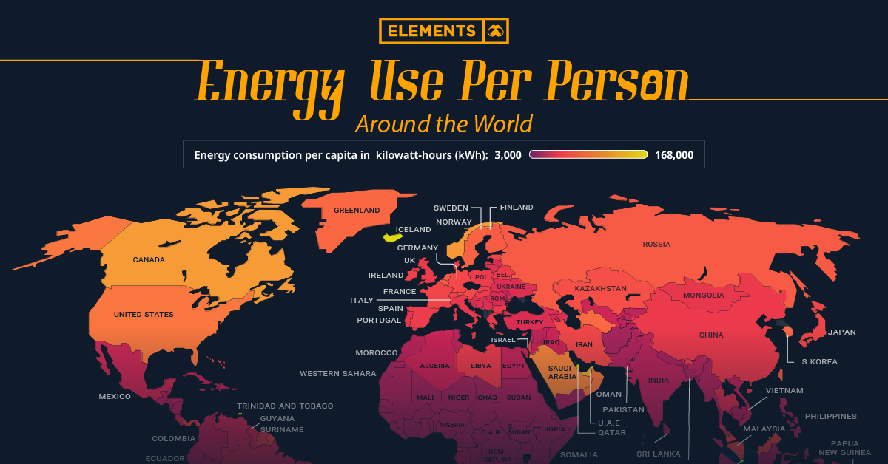

Powering a Sustainable Future: Smart and Responsible Electricity Usage
Electricity is the backbone of modern life, powering everything from homes and industries to healthcare and education. However, as global demand for electricity continues to rise, efficient and sustainable usage becomes increasingly crucial. Responsible electricity usage not only conserves resources but also reduces greenhouse gas emissions and mitigates environmental impacts. By adopting smart technologies, renewable sources, and energy-saving practices, we can maximize the benefits of electricity while minimizing its footprint, paving the way for a sustainable future.
Real-Time Electricity Usage:  
This data reflects the latest recorded levels of electricity usage, measured in kilowatt-hours (kWh). Monitoring electricity consumption is crucial, as increasing usage contributes to resource depletion and environmental impacts, directly affecting sustainability efforts.
Importance of This Work Plan
This work plan outlines a structured approach to understanding and optimizing electricity usage. By gathering data, collaborating with stakeholders, and implementing efficiency and conservation strategies, we aim to reduce energy waste and promote sustainable practices. This initiative supports global environmental goals and seeks to create a future where electricity is used responsibly, efficiently, and in harmony with the planet’s resources.